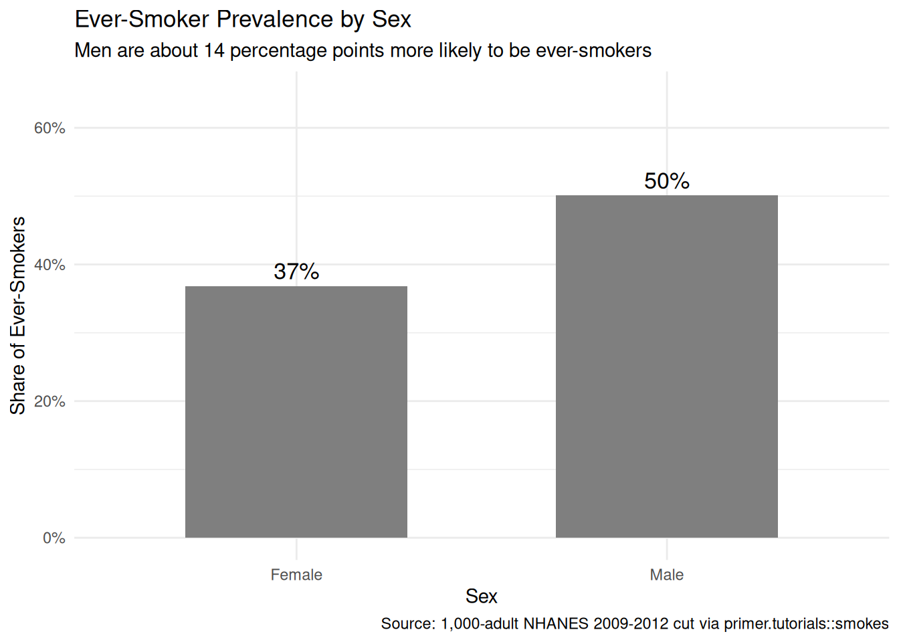
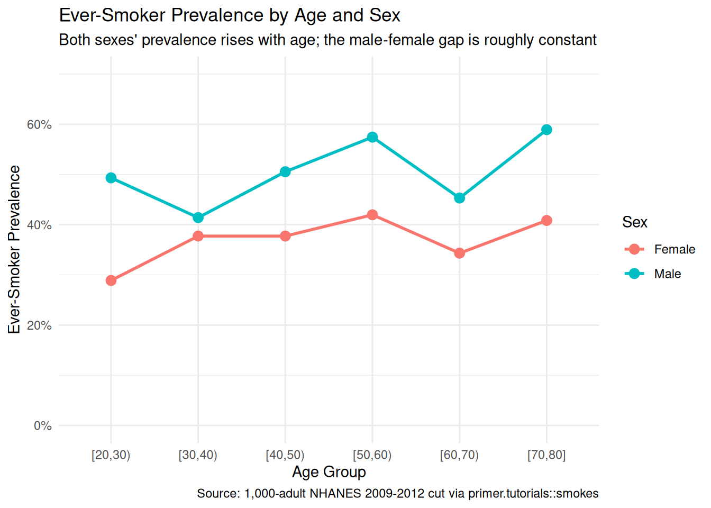
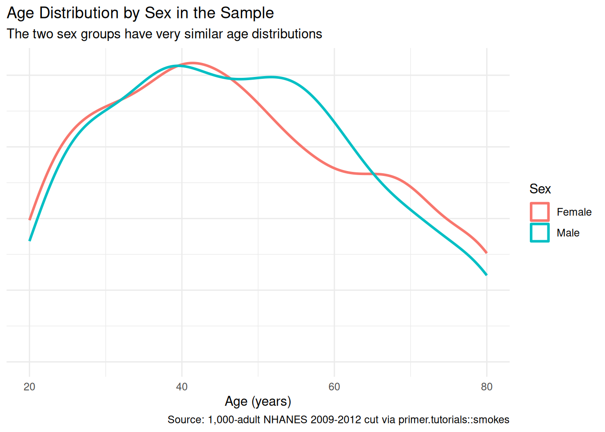
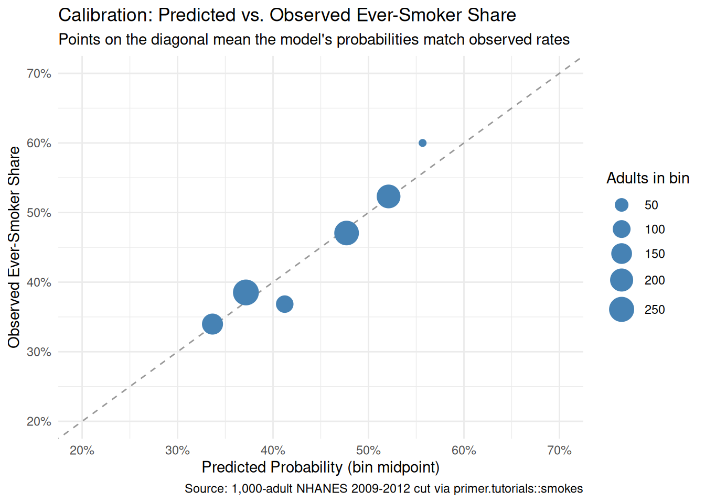
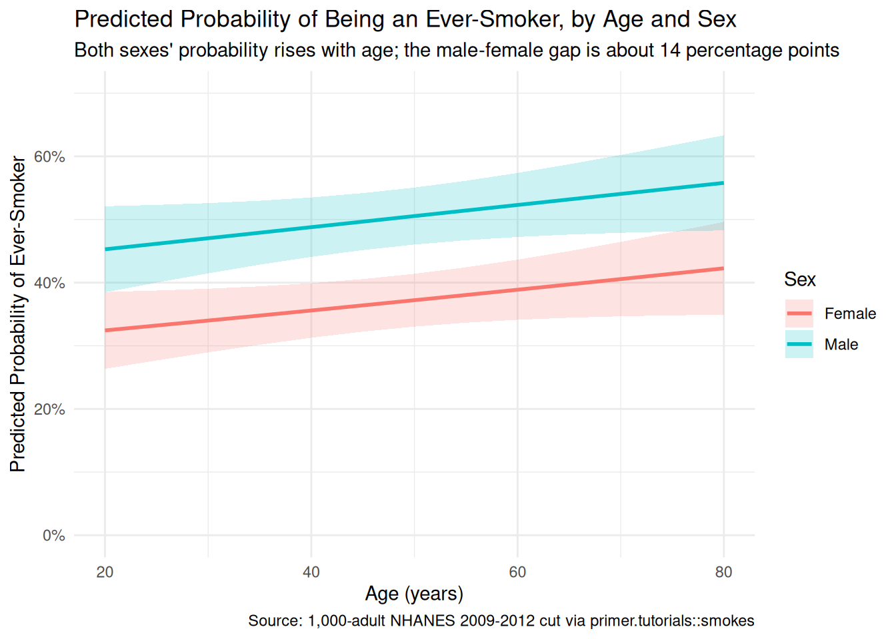

9 Smokes
The four Cardinal Virtues for working through a data science problem are Wisdom, Justice, Courage, and Temperance. This chapter — the fifth example chapter in the Primer and the first at the Medium tier — introduces the second outcome family the curriculum covers: a binary outcome modeled with logistic regression. The matching tutorial is 09-smokes in the primer.tutorials package; almost every line of code in that tutorial appears here, surrounded by more prose, more exploration, and a paired causal version of the same question.
Imagine that you are a public-health analyst at a state health department. The Public Health Commissioner has a big-picture goal — reduce the smoking-attributable disease burden in the state — and trusts you to find the evidence that helps target the next anti-smoking campaign. Many models would help: who is most likely to be smoking now, which cessation messages move which subgroups, which demographic and geographic segments are most cost-effective to reach, how outreach effects fade once a campaign ends. This chapter builds just one of them: a logistic-regression model of the probability of being an ever-smoker as a function of age and sex — the basic demographics on which outreach can actually be segmented when buying ads or staffing clinics. The estimate alone won’t decide the campaign, but the demographic-targeting piece is one good input. There are many decisions to make.
The data we will work from is smokes, available in the primer.tutorials package. It is a 1,000-row teaching cut drawn from the NHANES 2009–2012 cycles (the National Health and Nutrition Examination Survey, conducted by the U.S. Centers for Disease Control and Prevention’s National Center for Health Statistics), restricted to adults aged 20–80 with non-missing values on smoking status, age, and sex. The outcome column smoke is a factor with two levels, No and Yes; a Yes value means the respondent has smoked at least 100 cigarettes in their lifetime (the standard CDC definition of an ever-smoker). The covariate columns are age (continuous, in years) and sex (Female or Male). The sample contains 568 never-smokers and 432 ever-smokers, with 521 women and 479 men.
9.1 Wisdom

Wisdom begins with a question and then moves on to the creation of a Preceptor Table and an examination of our data.
Wisdom commits us to a question precise enough to be answered. The Preceptor Table makes the commitment concrete: it is the smallest table that, if every cell were filled in with the truth, would make the question’s answer easy to read off.
The combination of some data and an aching desire for an answer does not ensure that a reasonable answer can be extracted from a given body of data. — John W. Tukey
9.1.1 NHANES and the ever-smoker measure
The Recruits chapter introduced NHANES: the continuous national health-examination survey the CDC’s National Center for Health Statistics has run since the early 1960s. NHANES draws a stratified multistage probability sample of the U.S. civilian non-institutionalized population, oversampling specific demographic groups so that subgroup estimates have adequate precision. Selected participants are interviewed at home and then examined at a Mobile Examination Center (a fleet of medical-grade trailers that travels the country). For smoking, the data we care about comes from the questionnaire, not the examination: respondents are asked, “Have you smoked at least 100 cigarettes in your entire life?” A “yes” answer makes the respondent an ever-smoker; a “no” makes them a never-smoker.
The 100-cigarette cutoff is the CDC’s standard definition. It separates people who experimented as teenagers and never returned (never-smokers) from anyone who has had what amounts to several packs across their lifetime (ever-smokers). The definition does not distinguish among current daily smokers, current occasional smokers, and former smokers. For the question we are asking — who is most likely to be an ever-smoker — this is fine; for a serious cessation-targeting decision the analyst would want the finer-grained data (NHANES collects current-smoker status as well, but smokes keeps only the ever/never split for pedagogical simplicity).
A note on what ever-smoker status reflects. A 70-year-old’s ever-smoker status records a decision they made decades ago, in a world where smoking prevalence among U.S. adults peaked around 42% in the mid-1960s, where cigarette ads ran on broadcast television (banned in the U.S. in 1971), and where indoor smoking in workplaces, restaurants, airplanes, and hospitals was normal. A 30-year-old’s ever-smoker status records a decision they made in a world where smoking prevalence had fallen below 20%, where e-cigarettes had complicated the choice of “starter” nicotine product, and where indoor smoking was banned in virtually all public spaces. The two values look the same in the data — both are “Yes” or “No” — but they reflect very different historical environments. The model will treat them identically; the analyst should remember they aren’t.
9.1.2 Smoking demographics in historical context
A few specific facts about the demographic patterns the chapter’s model will pick up.
Men have historically been more likely than women to be ever-smokers in the United States, with the gap widening in the mid-20th century (men’s smoking peaked at roughly 55% prevalence in 1955; women’s peaked later, at about 35%, around 1965, partly driven by gendered marketing campaigns like Virginia Slims). The gap has narrowed substantially since, but it remains visible in any dataset that includes adults old enough to have smoked through the post-war decades. A logistic regression of ever-smoker status on sex, fit to a current adult sample, will show a coefficient that is mostly about historical sex differences in smoking initiation, not about current differences in behavior among today’s young adults.
Age has a more nuanced relationship with ever-smoker status. Older adults are more likely to be ever-smokers because their cohorts were more exposed to a pro-smoking environment in their teens. But the relationship is not strictly monotonic: very old adults (80+) have lower ever-smoker prevalence than 60- and 70-year-olds in some datasets, partly because heavy smokers in that cohort died younger. The 20–80 age range in our smokes data excludes the very-elderly survivor-bias effect, leaving a roughly monotonic age-prevalence relationship that the model can pick up cleanly.
9.1.3 The primary question
The primary question for this chapter is predictive:
What is the difference in the probability of being an ever-smoker between a 30-year-old woman and a 70-year-old man?
This is a predictive question — the kind of question that calls for a predictive model. We want a single number: the difference in the model-implied probability of being an ever-smoker between two specific demographic profiles (a 30-year-old woman and a 70-year-old man), expressed in percentage points. The Preceptor Table that would answer it has three columns — one identifying each adult, one for smoke (the binary outcome), one for the demographics implied by the question (Age and Sex) — and one row per U.S. adult aged 20–80 we want the answer to apply to.
A note on the binary-outcome model and what its parameters mean. A logistic regression is not a linear regression of the binary outcome on the covariates — it is a linear regression of the log-odds of the outcome being 1 on the covariates. The log-odds scale is not the scale a public-health analyst or a state Commissioner thinks in; they think in probabilities, and so do we. The chapter will read the model two ways: through the raw coefficient table (which is on the log-odds scale and not interpretable by inspection) and through the predicted probabilities that marginaleffects delivers on the outcome scale. The Temperance section commits us to the outcome-scale reading; the coefficient table is a tool for Courage, not an answer to a Commissioner.
| Preceptor Table --- Primary (predictive) question1 | |||
| Adult | Ever-Smoker | Age | Sex |
|---|---|---|---|
| 1 If all the information in this table were available, we could answer the question: What is the difference in the probability of being an ever-smoker between a 30-year-old woman and a 70-year-old man? | |||
| 2 Each row is one US adult aged 20-80 in 2026, the population a state anti-smoking campaign aims to reach, roughly 235 million people. | |||
| 3 Ever-smoker status: 'Yes' if the adult has smoked at least 100 cigarettes in their lifetime (the CDC standard), 'No' otherwise. | |||
| 4 Age in years (20-80) and self-reported sex (Female or Male) --- the two demographic axes the question references, and the axes an outreach campaign can segment its targeting on. | |||
The Preceptor Table here has one outcome column (Ever-Smoker) and two covariates (Age, Sex), one row per adult in the target population. The binary outcome is what marks this chapter as a logistic-regression chapter; everything else looks just like Recruits.
9.1.4 Exploring the data
Before fitting a model, look at the data. You can never look too closely at your data — the hour spent on a careful EDA almost always saves a day downstream.
Show the code
smokes |>
count(sex, smoke) |>
group_by(sex) |>
mutate(proportion = n / sum(n)) |>
ungroup() |>
filter(smoke == "Yes") |>
ggplot(aes(x = sex, y = proportion)) +
geom_col(fill = "grey50", width = 0.6) +
geom_text(aes(label = scales::label_percent(accuracy = 1)(proportion)),
vjust = -0.4, size = 4.5) +
scale_y_continuous(labels = scales::label_percent(), limits = c(0, 0.65)) +
labs(
title = "Ever-Smoker Prevalence by Sex",
subtitle = "Men are about 14 percentage points more likely to be ever-smokers",
x = "Sex",
y = "Share of Ever-Smokers",
caption = "Source: 1,000-adult NHANES 2009-2012 cut via primer.tutorials::smokes"
) +
theme_minimal()
Among the 1,000 adults in our sample, 36% of women and 50% of men are ever-smokers — a 14-percentage-point gap. This is consistent with the historical-cohort story: today’s adult population skews older than 30, and the older cohorts contained substantially more male than female smokers. The gap will narrow as younger cohorts age into the population, but in our 2009–2012 NHANES window it is large.
Show the code
smokes |>
mutate(age_bin = cut(age, breaks = seq(20, 80, by = 10), include.lowest = TRUE, right = FALSE)) |>
count(age_bin, sex, smoke) |>
group_by(age_bin, sex) |>
mutate(prevalence = n / sum(n)) |>
ungroup() |>
filter(smoke == "Yes") |>
ggplot(aes(x = age_bin, y = prevalence, color = sex, group = sex)) +
geom_point(size = 3) +
geom_line(linewidth = 1) +
scale_y_continuous(labels = scales::label_percent(), limits = c(0, 0.7)) +
labs(
title = "Ever-Smoker Prevalence by Age and Sex",
subtitle = "Both sexes' prevalence rises with age; the male-female gap is roughly constant",
x = "Age Group",
y = "Ever-Smoker Prevalence",
color = "Sex",
caption = "Source: 1,000-adult NHANES 2009-2012 cut via primer.tutorials::smokes"
) +
theme_minimal()
Binning the ages into ten-year groups makes the age pattern visible: both sexes show rising ever-smoker prevalence from the 20s up through the 60s, with the male-female gap of roughly 14–15 percentage points roughly constant across the age range. The 70-and-up bin shows some flattening, possibly reflecting survivor-bias effects or simply small sample size in that bin. The chapter’s logistic model will capture the level shift (Men > Women) and the age slope (older adults more likely to be ever-smokers), but it will not, by itself, capture any interaction between age and sex — a richer specification would.
Show the code
smokes |>
ggplot(aes(x = age, color = sex)) +
geom_density(linewidth = 1) +
labs(
title = "Age Distribution by Sex in the Sample",
subtitle = "The two sex groups have very similar age distributions",
x = "Age (years)",
y = NULL,
color = "Sex",
caption = "Source: 1,000-adult NHANES 2009-2012 cut via primer.tutorials::smokes"
) +
theme_minimal() +
theme(axis.text.y = element_blank(),
axis.ticks.y = element_blank())
The two sex groups have nearly identical age distributions in the sample, with the same uniform-ish shape across the 20–80 window. This matters because it means adjusting for age in the model should not move the sex coefficient much — there is no demographic confounding between age and sex to absorb. The model in Courage will confirm this.
A few specifics worth flagging from the EDA:
- The outcome is unbalanced but not severely so. About 43% of the sample are ever-smokers; the logistic-regression machinery handles this fine. A serious imbalance (say, 5% positives) would call for different specifications — the chapter does not face that issue.
-
The smokes tibble must be a factor for
logistic_reg(engine = "glm") |> fit()to accept it. A 0/1 integer outcome will fail with an opaque error; the data prep inprimer.tutorialsalready converts it. This is the factor-outcome gotcha from the CLAUDE.md style guide. - Age and sex are roughly uncorrelated in the sample. Their joint distribution is the product of their marginal distributions, give or take chance variation. This is the simplest case for an additive logistic regression.
9.1.5 The paired question
The difference between predictive models and causal models is that the former have one column for the outcome variable and the latter have more than one column.
Every chapter pairs its primary question with one in the opposite framing. Since our primary question is predictive, the paired question is causal:
What is the causal effect of being older (or being male) on the probability of being an ever-smoker?
This is an absurd question, in essentially the same way the Recruits chapter’s paired causal question was absurd. Age is not a manipulable treatment in any operational sense: you cannot toggle a 30-year-old to be 70 (or vice versa) and observe the change. Sex is not manipulable either — the Recruits chapter walked through the same point. The implied counterfactual — would this 30-year-old woman be more likely to be an ever-smoker if she were instead a 70-year-old man? — has no real-world referent because virtually everything else about the person would also be different. Age and sex are causally upstream of dozens of correlated variables (cohort effects, lifetime opportunities for smoking initiation, biological differences in nicotine metabolism) that are bundled with them.
The same fitted model serves both framings. The same coefficient on sexMale (about +0.54 on the log-odds scale, which translates to about a 14-percentage-point higher probability of being an ever-smoker when we compare males to females at the same age) is the answer to both. What differs is the analyst’s commitment:
- The predictive reading says: when we compare two adults differing in sex but matched on age, the male adult has a higher probability of being an ever-smoker by about 14 percentage points. This is a statement about comparison between two groups, with no claim about what would happen if anything changed.
- The causal reading would say: changing an adult’s sex from female to male would raise their probability of being an ever-smoker by about 14 percentage points. This requires a counterfactual we cannot construct.
The predictive reading is honest. The causal reading is not. The same point will recur each time the curriculum’s covariates are biological or developmental rather than experimentally manipulable.
| Preceptor Table --- Paired (causal) question1 | ||||
| Adult | Ever-Smoker if 30yF | Ever-Smoker if 70yM | Age | Sex |
|---|---|---|---|---|
| 1 If all the information in this table were available, we could answer the question: What is the causal effect of being older (or being male) on the probability of being an ever-smoker? The implied manipulation (toggling an adult's age or sex) is not realizable; the table is a pedagogical device for making the predictive/causal distinction visible, not a defensible causal claim. | ||||
| 2 Each row is one adult chosen because their actual age and sex match one of the two profiles being compared. | ||||
| 3 Two potential outcomes per row: ever-smoker status at age 30 and female versus at age 70 and male. The cell matching the adult's actual profile is observed; the other is the unobservable counterfactual, hatched. | ||||
| 4 The same Age and Sex columns that sat under a Covariates spanner in the primary Preceptor Table sit here under a Treatment spanner. The columns are identical; only the analyst's commitment changed. | ||||
The two Preceptor Tables differ in the bookkeeping that distinguishes predictive from causal:
- The primary table has one outcome column (
Ever-Smoker); the paired table has two potential-outcome columns (one for each profile being compared in the question). - The primary table has
AgeandSexunder a Covariates spanner; the paired table has the same columns under a Treatment spanner. The columns themselves are identical.
The same fitted model serves both questions. The two readings differ only in what the analyst is willing to claim.
9.2 Justice

Justice concerns the Population Table, the four key assumptions which underlie it (validity, stability, representativeness, and unconfoundedness), and the choice of probability family and link function for the data generating mechanism.
Justice is where you (or your critics) raise concerns about whether the model will do what you want it to do. The four assumptions are the named families of concerns; they are not testable from the data alone, they are choices the analyst makes and defends.
The bridge runs data → population → Preceptor Table. Justice’s job is to make sure both arrows are defensible.
There are known knowns. There are things we know we know. We also know there are known unknowns. That is to say, we know there are some things we do not know. But there are also unknown unknowns, the ones we do not know we do not know. — Donald Rumsfeld
9.2.1 The Population Table for the primary question
| Population Table --- Primary question1 | |||||
| Adult | Year | Ever-Smoker | Age | Sex | |
|---|---|---|---|---|---|
| 1 This table combines NHANES 2009-2012 data with the Preceptor Table's 2026 adults, drawn from the same broader population of US adults aged 20-80. | |||||
| 2 Data rows are NHANES respondents from 2010-2012. Preceptor rows are 2026 US adults. Robert Klein and James Whitfield appear in both blocks at different ages, illustrating the 14-to-16-year gap stability must bridge. | |||||
| 3 Ever-smoker status from the NHANES questionnaire item on lifetime cigarette use, applied identically to Data and Preceptor rows. | |||||
| 4 Age and sex as recorded in each source: NHANES survey response for Data rows, the same individuals' 2026 age and unchanged sex for Preceptor rows. | |||||
9.2.2 Validity
Validity is the consistency, or lack thereof, in the columns of the data set and the corresponding columns in the Preceptor Table.
Validity is about columns. Two columns can have the same name and measure different things; two columns can have different names and measure the same thing.
For our problem, the outcome column smoke records the answer to one specific NHANES survey question: “Have you smoked at least 100 cigarettes in your entire life?” The Preceptor Table’s outcome column is meant to capture whether the adult is the kind of person an anti-smoking campaign should reach. The two are close but not identical. A 65-year-old who quit smoking in 1985 answers “Yes” to the survey question and is therefore counted as an ever-smoker in our data — but they are not a useful target for a cessation campaign (they already quit) and may not even be a useful target for a relapse-prevention campaign (40 years out, the risk is low). A 25-year-old who has smoked 50 cigarettes in a year of casual social use answers “No” and is counted as a never-smoker — but they are arguably the highest-leverage target for a prevention campaign before their habit escalates.
The covariate columns are simpler. age is recorded in years; sufficient for our purposes. sex is the respondent’s self-reported sex at the time of the survey. The Preceptor Table’s sex column is supposed to capture the demographic axis on which the campaign will segment its outreach (the campaign buys ads on different platforms for different audiences, and a campaign segmented on “men vs women” is operationally meaningful). The two definitions of sex match closely enough for the campaign-planning use case.
9.2.3 Stability
Stability means that the relationship between the columns in the Population Table is the same for three categories of rows: the data, the Preceptor Table, and the larger population from which both are drawn.
Stability is a statement about parameters, not distributions. A change in the distribution of smoking status between 2010 and 2026 does not, by itself, violate stability. What violates stability is a change in the parameter governing the relationship: the coefficient on sex, the coefficient on age, the intercept.
This is where the chapter’s headline concern lives. Smoking prevalence in U.S. adults has been falling for fifty years; the 2010 NHANES cycle captured a window in which adult prevalence was around 19%, the 2024 window will capture one in which adult prevalence is below 12%. The intercept of our logistic regression has therefore drifted downward over the data-to-Preceptor gap. The coefficient on age may also have shifted: the cohort effects underlying age-prevalence in the 2010 data reflect smoking initiation patterns from the 1950s through the 1990s, while the cohort effects in 2026 data would reflect patterns from the 1970s through the 2010s. The 70-year-old in 2026 had a meaningfully different youth than the 70-year-old in 2010 — both grew up in pro-smoking eras, but the 2026 70-year-old’s adolescence was already touched by anti-smoking campaigns. The model’s age coefficient, estimated on 2010 data, may not be the right age coefficient for 2026.
The coefficient on sex has probably moved the least, because the historical sex gap in smoking is a slow-moving feature of cohort biographies, but a serious analyst would not treat any of these coefficients as permanent.
A common confusion is to point at any change between 2010 and 2026 and call it a stability violation. It isn’t. The mean of ever-smoker status has fallen; the age distribution of the population has shifted; the mix of demographics has shifted. None of that is a stability violation on its own. The thing that hurts us is a shift in the parameter values themselves.
9.2.4 Representativeness
Representativeness, or the lack thereof, concerns two relationships among the rows in the Population Table. The first is between the data and the other rows. The second is between the other rows and the Preceptor Table.
Two links to defend.
Data → population. NHANES is closer to a probability sample than most U.S. health surveys — a stratified, multistage probability sample of the U.S. civilian non-institutionalized population. But the educational version we draw smokes from drops the survey weights that would let us reweight back to representativeness on the demographic dimensions NHANES oversampled. Our 1,000-row sample is therefore representative of the educational-NHANES file, not directly of the U.S. adult population. The two are close but not identical; for our question, the gap is small enough to ignore in a first pass.
Population → Preceptor Table. The Preceptor Table covers U.S. adults aged 20–80 in 2026; the Population (and our Data) covers the same demographic in 2009–2012. The two are the same population in the sense that both are U.S. adults of working age, but they are different cohorts: the 2026 30-year-old was born in 1996; the 2010 30-year-old was born in 1980. Their lifetime exposures to smoking, tobacco regulation, e-cigarettes, and anti-smoking messaging are very different. Representativeness in this strict sense is not satisfied; cohort drift is real and bigger than the data wants to acknowledge.
A non-representative sample doesn’t guarantee a biased estimate — by chance, the 2010 patterns might happen to coincide with 2026 patterns. But we have no principled reason to expect that.
9.2.5 Unconfoundedness (paired causal question only)
Unconfoundedness means that the treatment assignment is independent of the potential outcomes, when we condition on pre-treatment covariates.
Unconfoundedness applies only to the paired causal question. The primary predictive question does not require it.
For the paired question, unconfoundedness is not defensible. Age and sex are not manipulable treatments; there is no assignment mechanism that randomly assigns adults to be 30 vs. 70 or female vs. male while leaving everything else about them fixed. The implied counterfactual — “if this adult had been a 30-year-old woman instead of a 70-year-old man, what would their ever-smoker status be?” — has no operational referent. Everything that determines a person’s age and sex (genetics, time, biology) is bundled with that person’s lifetime exposure to a smoking environment, their nicotine metabolism, their social network’s smoking norms. The treatment, in the causal sense, doesn’t exist.
This is the substantive reason the paired causal question is absurd, not just rhetorical, and the same point recurs whenever the curriculum’s covariates are biological or developmental. We carry the paired Preceptor Table to show what the bookkeeping would look like if we made the causal commitment, but Temperance will not defend the causal reading as a real-world claim.
9.2.6 The Population Table for the paired question
The paired Population Table has the same row structure as the primary — 2009–2012 NHANES data rows, 2026 Preceptor rows — but two potential-outcome columns instead of one, with the unobservable counterfactual hatched in the Preceptor rows and ... in the Data rows.
| Population Table --- Paired question1 | ||||||
| Adult | Year | Ever-Smoker if 30yF | Ever-Smoker if 70yM | Age | Sex | |
|---|---|---|---|---|---|---|
| 1 Same row structure as the primary Population Table, with two potential-outcome columns instead of one. Data rows have one '...' for the unobserved counterfactual; Preceptor rows have both potential outcomes filled in, with the unobservable one hatched. | ||||||
| 2 Data rows are NHANES respondents whose actual age and sex match one of the two profiles being compared. Preceptor rows reuse Maria Gonzalez and James Whitfield from the Preceptor Table. | ||||||
| 3 Ever-smoker status under each of the two compared profiles. Hatching marks the truth that exists in the table but could never be observed in reality, since no adult is simultaneously both profiles. | ||||||
| 4 Age and sex, jointly treated here as a two-level treatment (being a 30-year-old woman versus being a 70-year-old man) for this absurd, pedagogical causal framing. | ||||||
9.2.7 Probability family and link function
The outcome smoke is a binary variable (Yes/No, encoded as a factor for tidymodels). The probability family for a binary outcome is Bernoulli:
\[Y \sim \text{Bernoulli}(\rho)\]
The link function for a binary outcome is the logit:
\[\log \left( \frac{\rho}{1-\rho} \right) = \beta_0 + \beta_1 X_1 + \cdots + \beta_n X_n\]
Equivalently:
\[\rho = \frac{1}{1 + \exp\left(- (\beta_0 + \beta_1 X_1 + \cdots + \beta_n X_n) \right)}\]
The first form makes clear what the coefficients are linear in (log-odds); the second form gives the probability scale that Temperance uses. Our model will be a logistic regression. The covariates we use are settled in Courage.
9.3 Courage

Courage creates the data generating mechanism.
The three languages of data science are words, math, and code, and the most important of these is code. Justice settled the structural choices — binary outcome, Bernoulli family, logit link. Courage picks specific covariates, writes the model in code, and estimates the parameters.
9.3.1 Candidate models
We try a handful of plausible specifications, see what each says, and commit to the one that matches the question.
9.3.1.1 Candidate 1: smoke ~ sex
Show the code
logistic_reg(engine = "glm") |>
fit(smoke ~ sex, data = smokes) |>
tidy(conf.int = TRUE) |>
select(term, estimate, conf.low, conf.high) |>
mutate(across(where(is.numeric), \(v) round(v, 3))) |>
kable(caption = "Candidate model: smoke ~ sex. Coefficients on the log-odds scale. Source: 1,000-adult NHANES 2009-2012 cut via primer.tutorials::smokes.")| term | estimate | conf.low | conf.high |
|---|---|---|---|
| (Intercept) | -0.539 | -0.718 | -0.362 |
| sexMale | 0.543 | 0.291 | 0.796 |
The intercept (-0.54) is the log-odds of being an ever-smoker for the reference category (Female): translated to probability, \(1/(1+\exp(0.54)) \approx 0.37\), or 37%. The coefficient on sexMale (+0.54) is the log-odds difference between males and females: translated to probabilities, this corresponds to a male probability of about 50%, or a roughly 14 percentage-point gap. The 95% confidence interval on the log-odds is [0.29, 0.80], well away from zero — the difference is real, and male adults are more likely to be ever-smokers than female adults at the population scale.
A note on the log-odds scale: it is not the scale the chapter or any practitioner reads off as an answer. Log-odds is a tool for fitting and for testing whether a covariate matters; the interpretation always translates to probability via marginaleffects. We will commit to the probability-scale reading in Temperance, but we do the link-scale work in Courage because it is part of how the model gets built.
9.3.1.2 Candidate 2: smoke ~ age
Show the code
logistic_reg(engine = "glm") |>
fit(smoke ~ age, data = smokes) |>
tidy(conf.int = TRUE) |>
select(term, estimate, conf.low, conf.high) |>
mutate(across(where(is.numeric), \(v) round(v, 3))) |>
kable(caption = "Candidate model: smoke ~ age. Coefficients on the log-odds scale. Source: 1,000-adult NHANES 2009-2012 cut via primer.tutorials::smokes.")| term | estimate | conf.low | conf.high |
|---|---|---|---|
| (Intercept) | -0.602 | -0.984 | -0.223 |
| age | 0.007 | -0.001 | 0.014 |
The coefficient on age is small (+0.007) with a confidence interval that just barely crosses zero ([-0.001, 0.014]). On the log-odds scale a coefficient of 0.007 per year of age means a roughly 0.3-log-odds shift across the full 20–80 range — modest. The 95% confidence interval does not quite exclude zero, so the age-only model is borderline statistically: it cannot confidently distinguish a positive age effect from no effect.
This is informative as a diagnostic. Age by itself has weak signal in this 1,000-row sample. But the EDA suggested age does matter when we look at the prevalence-by-age plot; the issue is that age and sex together carry the signal, and age alone is fighting the sex variation in the sample. Adding sex to the model will tighten the age coefficient and let us see the additive contribution clearly.
9.3.1.3 Candidate 3: smoke ~ age + sex
Show the code
logistic_reg(engine = "glm") |>
fit(smoke ~ age + sex, data = smokes) |>
tidy(conf.int = TRUE) |>
select(term, estimate, conf.low, conf.high) |>
mutate(across(where(is.numeric), \(v) round(v, 3))) |>
kable(caption = "Candidate model: smoke ~ age + sex. Coefficients on the log-odds scale. Source: 1,000-adult NHANES 2009-2012 cut via primer.tutorials::smokes.")| term | estimate | conf.low | conf.high |
|---|---|---|---|
| (Intercept) | -0.875 | -1.283 | -0.471 |
| age | 0.007 | -0.001 | 0.015 |
| sexMale | 0.545 | 0.292 | 0.798 |
The joint model is what the chapter commits to. The intercept (-0.875) is the log-odds of being an ever-smoker for a 0-year-old female — not a meaningful baseline, since we have no 0-year-olds in the sample, but the parameter is what it is. The coefficient on age (+0.007) is essentially unchanged from candidate 2 with a confidence interval ([-0.001, 0.015]) that still skims zero. The coefficient on sexMale (+0.545) is essentially unchanged from candidate 1, and the confidence interval ([0.29, 0.80]) again excludes zero comfortably. Adding age to the sex-only model doesn’t move the sex coefficient because age and sex are uncorrelated in the sample; adding sex to the age-only model doesn’t move the age coefficient much either, but it slightly tightens the standard error because the residual variance shrinks once sex is absorbed.
The model says: among U.S. adults aged 20–80, adjusting for age, men are about 14 percentage points more likely than women to be ever-smokers; adjusting for sex, each additional year of age corresponds to a small (less than half a percentage point) increase in ever-smoker probability. The age effect is small enough that a real analyst might leave it out for simplicity; we keep it because the question references both age and sex.
9.3.2 The chosen DGM
The joint model is the one that matches the question:
Show the code
fit_smokes <- logistic_reg(engine = "glm") |>
fit(smoke ~ age + sex, data = smokes)With the parameters estimated, the fitted DGM in log-odds form is:
\[\log \left( \frac{\widehat{\rho}}{1-\widehat{\rho}} \right) = -0.875 + 0.007 \cdot \text{Age} + 0.545 \cdot \text{sexMale}\]
Equivalently, on the probability scale:
\[\widehat{\rho} = \frac{1}{1 + \exp(-(-0.875 + 0.007 \cdot \text{Age} + 0.545 \cdot \text{sexMale}))}\]
sexMale is a 0/1 dummy: 1 for male, 0 for female. The first form makes the model’s structure visible: it is linear in the log-odds. The second form is what we read off as an answer: a probability between 0 and 1 for any combination of Age and Sex. The Temperance section computes these probabilities for the specific demographic profiles the question asks about.
This is our data generating mechanism. It serves both the primary predictive question and the paired causal question.
9.3.3 Model checking
The standard plot-of-fitted-values-versus-actual works less cleanly for a binary outcome than for a continuous one — both fitted and actual values cluster at 0 and 1, with the fitted values being smooth probabilities and the actuals being just 0s and 1s. A more useful check for a logistic-regression model compares the predicted probability of smoke == Yes against the observed proportion of smoke == Yes, binned by predicted probability.
Show the code
fit_eng <- extract_fit_engine(fit_smokes)
calib_df <- smokes |>
mutate(predicted = predict(fit_eng, type = "response"),
actual = if_else(smoke == "Yes", 1L, 0L),
bin = cut(predicted, breaks = seq(0.2, 0.7, by = 0.05), include.lowest = TRUE)) |>
group_by(bin) |>
summarise(mid = mean(predicted), obs = mean(actual), n = n(), .groups = "drop") |>
filter(!is.na(bin))
ggplot(calib_df, aes(x = mid, y = obs)) +
geom_abline(slope = 1, intercept = 0, color = "grey60", linetype = "dashed") +
geom_point(aes(size = n), color = "steelblue") +
scale_x_continuous(labels = scales::label_percent(), limits = c(0.2, 0.7)) +
scale_y_continuous(labels = scales::label_percent(), limits = c(0.2, 0.7)) +
scale_size_continuous(range = c(2, 8)) +
labs(
title = "Calibration: Predicted vs. Observed Ever-Smoker Share",
subtitle = "Points on the diagonal mean the model's probabilities match observed rates",
x = "Predicted Probability (bin midpoint)",
y = "Observed Ever-Smoker Share",
size = "Adults in bin",
caption = "Source: 1,000-adult NHANES 2009-2012 cut via primer.tutorials::smokes"
) +
theme_minimal()
Points near the diagonal mean the model is well-calibrated: when it predicts a 40% probability, the observed share is close to 40%. The plot shows the points tracking the diagonal reasonably well, with the expected wobble from binning and finite sample sizes. The model is not perfectly calibrated but is close enough that the headline predictions can be trusted as probabilities, not just as log-odds-to-probability translations.
9.4 Temperance

Temperance interprets the data generating mechanism and then uses it to answer, with the help of graphics, the question(s) with which we began. Humility reminds us that this answer is always false.
In the modern world, all parameters are nuisance parameters. What we care about is what the model says on the outcome scale: predicted probabilities, predicted differences in probabilities. The log-odds coefficients of Courage are the model’s parameters; they are not its answers. The tool for translating parameters into outcome-scale answers is the marginaleffects package, with companion book Model to Meaning by Vincent Arel-Bundock.
9.4.1 The primary (predictive) reading
Show the code
fit_eng <- extract_fit_engine(fit_smokes)
predictions(fit_eng,
newdata = tibble(age = rep(seq(20, 80, by = 5), 2),
sex = rep(c("Female", "Male"), each = 13)),
type = "response") |>
as_tibble() |>
ggplot(aes(x = age, y = estimate, color = sex, fill = sex)) +
geom_ribbon(aes(ymin = conf.low, ymax = conf.high), alpha = 0.2, color = NA) +
geom_line(linewidth = 1) +
scale_y_continuous(labels = scales::label_percent(), limits = c(0, 0.7)) +
labs(
title = "Predicted Probability of Being an Ever-Smoker, by Age and Sex",
subtitle = "Both sexes' probability rises with age; the male-female gap is about 14 percentage points",
x = "Age (years)",
y = "Predicted Probability of Ever-Smoker",
color = "Sex",
fill = "Sex",
caption = "Source: 1,000-adult NHANES 2009-2012 cut via primer.tutorials::smokes"
) +
theme_minimal()
The primary question was “What is the difference in the probability of being an ever-smoker between a 30-year-old woman and a 70-year-old man?” The model’s answer:
- Predicted probability that a 30-year-old woman is an ever-smoker: about 34%, 95% CI roughly [29%, 39%].
- Predicted probability that a 70-year-old man is an ever-smoker: about 54%, 95% CI roughly [48%, 60%].
- Difference: about 20 percentage points, 95% CI roughly [11, 30 percentage points], computed jointly with
avg_comparisons().
The language is comparison language throughout. Comparing a 30-year-old woman to a 70-year-old man, the man has a probability of being an ever-smoker about 20 percentage points higher. No words like cause, raise, change. Two demographic axes shift between the two profiles — age and sex — and the model says the joint shift accounts for about 20 percentage points of difference in ever-smoker probability, with most of that coming from the sex shift (about 14 pp) and a smaller piece from the age shift (about 6 pp).
A note on the unit of the headline number. The 20-pp difference is in percentage points, not percent. The 70-year-old man’s probability is about 54%; the 30-year-old woman’s is about 34%; the gap is 20 percentage points, or about 60% in relative terms (the man is 60% more likely). Confusing percentage points with percent is one of the most common errors a real public-health analyst makes when reading model output for non-technical audiences.
9.4.2 The paired (causal) reading
The paired question was “What is the causal effect of being older (or being male) on the probability of being an ever-smoker?” The same fitted model gives the same number: about a 20-percentage-point difference.
The causal reading would say: changing an adult from a 30-year-old woman to a 70-year-old man would raise their probability of being an ever-smoker by about 20 percentage points. That is what the paired Preceptor Table commits us to. The bookkeeping is fine, the arithmetic is fine, the number is fine. The reading itself is absurd: there is no operationally meaningful counterfactual under which a person’s age and sex change while everything else about them is fixed.
The pedagogical point is the same as in Recruits: the causal reading is available in the sense that the same fit and the same number can be read either way, but availability is not defensibility. The thing that makes a model causal is the analyst’s commitment about what the covariates are. The data does not change. The fit does not change. The number does not change. With age and sex, the predictive claim is honest and the causal claim is not.
9.4.3 QoI variety
The chapter has answered the specific question we asked: the predicted-probability difference between two demographic profiles. That is one number in a family. A state health department’s anti-smoking campaign would also want:
- Predicted probabilities at the full demographic grid. The chapter’s plot already shows this: probability as a function of age, separately for each sex. A planner choosing which ads to run, on which platforms, at which times, would want this whole surface, not just the answer at two specific profiles.
-
Predicted current-smoker probabilities, not just ever-smoker probabilities. The chapter uses the ever-smoker outcome because that’s what
smokesrecords, but the campaign-relevant outcome is current smoking status. Translating between the two requires data the chapter does not have. A serious analyst would re-fit the model on the full NHANES data, separately for current and former smokers. - Intervention scenarios. What happens to predicted probabilities under a campaign that successfully reduces sex-difference in initiation (gender-neutral marketing was, historically, a major factor in narrowing the gap)? What about age-cohort interventions targeting young adults specifically? These are simulation questions: pick a counterfactual world, predict probabilities under it, compare to the baseline. The same fitted DGM supports all of them.
The point is that “probability difference at two specific profiles” is one question in a family, and the DGM answers the whole family.
9.4.4 Why the answer is wrong
We can never know the truth.
Three things are likely wrong with our answer.
First, the validity gap. The data’s outcome is ever-smoker (lifetime status), but the campaign’s target is current or imminent smokers. The 65-year-old male long-quit smoker counts as an ever-smoker in the data but is irrelevant to a cessation campaign. The mismatch between the data’s outcome and the decision’s outcome is, by itself, enough to make the chapter’s 20-percentage-point number a misleading guide for a real campaign.
Second, the stability gap. The model was fit on 2009–2012 NHANES data. The 2026 population the campaign would target has different cohort biographies, different baseline smoking prevalence, and probably different age- and sex-specific patterns. The model’s coefficients almost certainly need updating before being applied to 2026.
Third, the world is always more uncertain than our models would have us believe. Even if every assumption about validity, stability, and representativeness were exactly right — which they aren’t — the reported confidence interval captures only sampling uncertainty under the model. It doesn’t capture uncertainty about whether the model itself is correct, or about whether 1,000 NHANES respondents from 2009–2012 are the right basis for inferring about 235 million 2026 U.S. adults. The right confidence interval for the population-scale answer to the chapter’s question is meaningfully wider than the number the model reports.
9.5 Summary
Show the code
fit_eng <- extract_fit_engine(fit_smokes)
predictions(fit_eng,
newdata = tibble(age = rep(seq(20, 80, by = 5), 2),
sex = rep(c("Female", "Male"), each = 13)),
type = "response") |>
as_tibble() |>
ggplot(aes(x = age, y = estimate, color = sex, fill = sex)) +
geom_ribbon(aes(ymin = conf.low, ymax = conf.high), alpha = 0.2, color = NA) +
geom_line(linewidth = 1) +
scale_y_continuous(labels = scales::label_percent(), limits = c(0, 0.7)) +
labs(
title = "Predicted Probability of Being an Ever-Smoker, by Age and Sex",
subtitle = "Both sexes' probability rises with age; the male-female gap is about 14 percentage points",
x = "Age (years)",
y = "Predicted Probability of Ever-Smoker",
color = "Sex",
fill = "Sex",
caption = "Source: 1,000-adult NHANES 2009-2012 cut via primer.tutorials::smokes"
) +
theme_minimal()
Smoking patterns in U.S. adults are strongly patterned by age cohort and sex, with men historically more likely to be ever-smokers than women and older adults more likely than younger ones. Using a 1,000-adult sample drawn from NHANES 2009–2012 (the CDC’s National Health and Nutrition Examination Survey), restricted to ages 20–80, we estimated the probability of being an ever-smoker as a function of age and sex. We modeled the binary smoke outcome as a Bernoulli variable which is a logistic function of age and sex, and read the fit two ways: a predictive comparison between two demographic profiles, and an absurd-but-pedagogically-useful causal counterfactual that asked what would happen if a 30-year-old woman were swapped for a 70-year-old man. The predictive reading is honest; the causal reading is not, because age and sex are not manipulable in any operational sense. The estimate: about a 20-percentage-point higher probability of being an ever-smoker for a 70-year-old man than for a 30-year-old woman, 95% confidence interval roughly [11, 30 percentage points]. Validity (ever-smoker vs current-smoker), stability (2010 cohorts vs 2026 cohorts), and representativeness (educational NHANES vs the real adult population) all push toward a wider real-world confidence interval than the model reports.
A state health department’s anti-smoking campaign cares about current and imminent smokers, not lifetime ever-smokers; the chapter’s number is one input to a serious targeting decision, not the decision itself. The probability-scale prediction surface, segmented intervention scenarios, and current-smoker-specific re-fits are all available from the same modeling framework with the right data.
The world is always more uncertain than our models would have us believe.